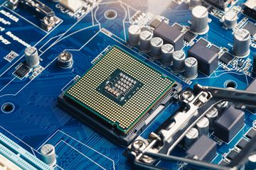
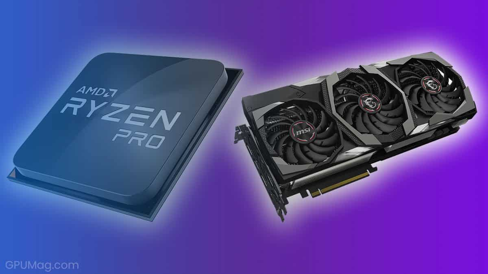
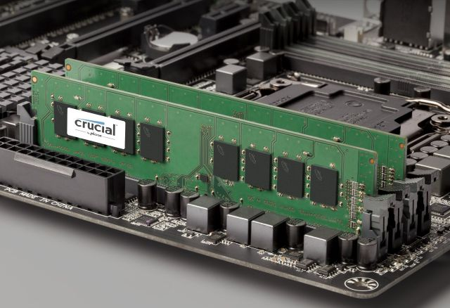
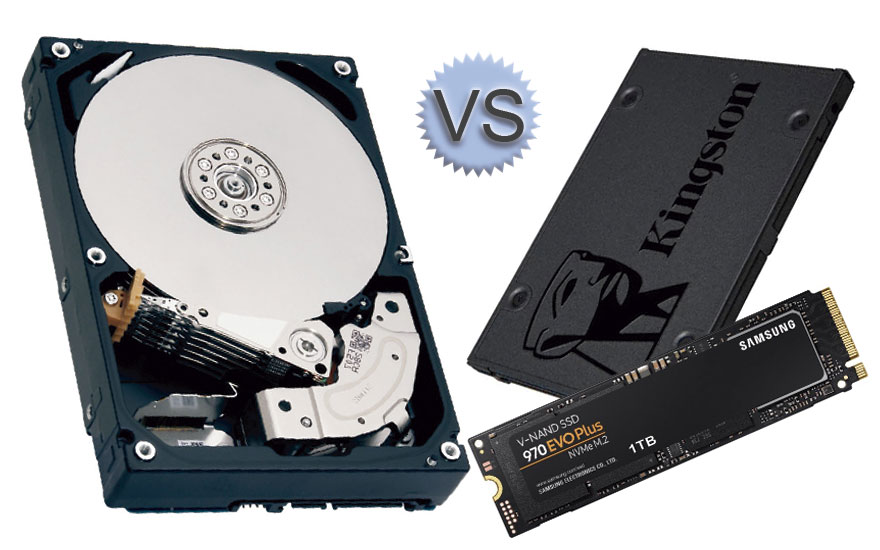
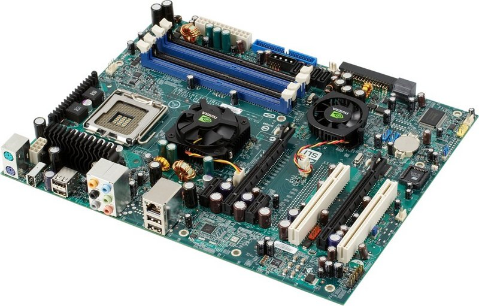
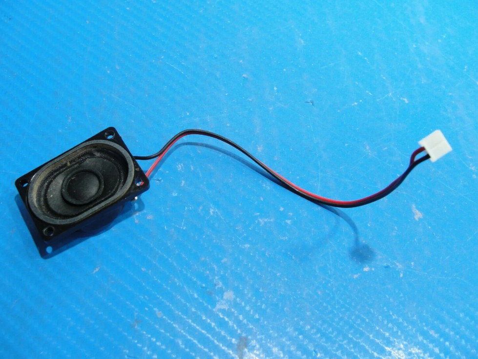
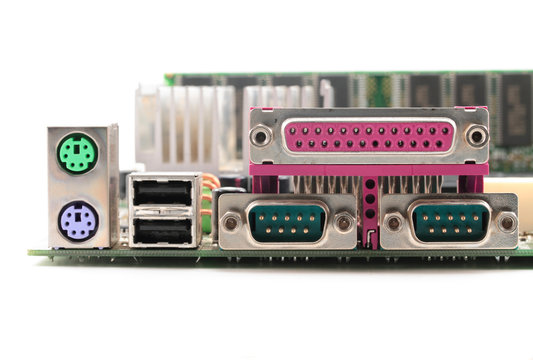
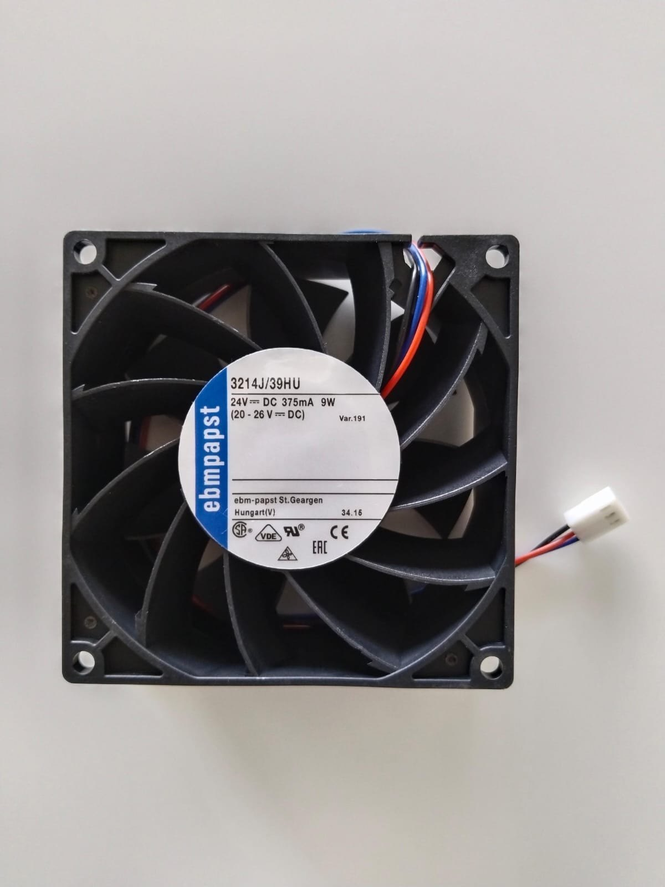
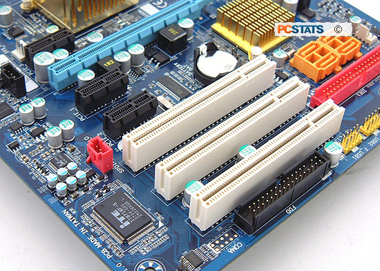

Computer Parts |
|  |
Central Processing Unit (CPU)The CPU is one of the most important components of any computer, which acts as its control center or brain. The CPU is a complex amalgamation of miniscule circuitry that runs the computer's operating system and applications that are stored on a physical drive. The CPU interprets, processes and executes instructions that are given from the computers' other components. It performs logical, arithmetical and other operations to process data input and outputs information to give to other parts of the computer. Modern CPUs tend to contain more than one core, so information can be process more than one sequence of instructions at a time. These instructions are given to the CPU in machine code, which is a collections of 1s and 0s, and nearly impossible for a human to interpret. More information |
|  |
Graphics Processing Unit (GPU)The GPU in a device is similar to a CPU in several ways, but handles more photo and video rendering, which makes them well-suited for use in creative productions and gaming. The reason why this is seperate from the CPU is due to how graphics tend to take up more resources than mathematical calculations, so the processing of those instructions should be handled by something that is more capable of handling such tasks. The GPU in a computer can either be integrated into the GPU chip itself, which is common in laptops and pre-built PCs, while discrete GPUs are a standalone component that can handle much more load, but at a cost of money, size, and heat production. More information |
|  |
Random Access Memory (RAM)RAM is a type of computer memory that stores data and instructions while a computer is running, and is flushed (or deleted) once the computer is shut down. The "random access" in its name is due to how a device can access RAM so quickly. It needs to be quick too, as it is the middle man or a large cache between the physical drive and the CPU; if your RAM is slow, your CPU will also have its speed impacted. While physical drives do not need a constant source of charge to store memory, RAM must have a source of power, or else the data will degrade. They also have a costly price, due to their read and write speeds. More information |
|  |
Physical DrivesPhysical drives store data in 1s and 0s, hosting the operating system, applications, and your data, even when the computer is turned off. The two most common types of physical drives are Hard Disk Drives (HDD) and Solid State Drives (SSD). Hard disk drives tend to have much more storage, but are also much cheaper, older, larger, slower, and prone to failures than SSDs. With mechanical parts, HDDs are quite sensitive to sudden movement, magnets, and wear. SSDs are almost the opposite of HDDs in terms of features; they tend to have less storage and are more expensive, but they also are newer, smaller, faster, and have no moving parts, which makes it unlikely to lose data. HDDs in the modern age tend to be used for low-end devices and backups, while SSDs are for the more high-end and newer devices. More information |
|  |
MotherboardThe motherboard is the primary circuit board in a computer, usually harboring the CPU, GPU, RAM, expansion slots, physical ports, BIOS, CMOS, and more. It makes it easy for each of these components to talk to one another, and allows for easy switching of parts on a buildable computer. More information |

|
Power SupplyTo recap, alternating high voltage current (AC) is primarily used in carrying electricity from power lines to your home, while most of your home electronics use direct current (DC) for efficiency. Those electronics need to carry a converter, or a power supply, to convert AC to usable DC. A power supply (PSU) converts the AC into DC, and they also regulate the DC output voltage to the specific tolerances required for computing components. The power supply tends to be inside the tower if the computer is a PC, while laptops have an external power supply connected to the charger. More information |
|  |
SpeakersDigital speakers translate electrical signals into audible sound, which can either be integrated into a computer or plugged into the computer. An internal speaker is an integrated audio output device within a computer, responsible for producing sounds for feedback or entertainment. Integerated speakers come standard with laptops and usually older PCs, while modern PCs may not have one, so the user has more "freedom" to use another audio output for better results. More information |
|  |
Physical PortsPhysical ports are physical connectors on a computer to connect input and / or output devices, like a keyboard, mouse, monitor, external drive, headphones, printer, or speaker. Historically, there were tons of different connectors for specific adapters due to lack of compatability. Some outdated ports included serial ports, PS/2 ports, parallel ports, modems, firewire, composite audio / video, component video, display connectors, and much more. Some more common adapters that are starting to being phased out are HDMI, mini-USB, micro-USB, and VGA. Nowadays, all someone really has to deal with on modern computers is USB 2.0, USB-C, the audio jack, and ethernet. More information |
|  |
Cooling SystemsCooling systems are meant to cool your computer and ensure that it doesn't overheat. Fans are the most common type of cooling system in any computer, where it uses energy to push hot air out of the device. Fans usually work in tandem with heatsinks, which are connected to heat-creating components such as the CPU. These are metal plates that have several fins extending away from the component, absorbing heat from the component to make sure it doesn't overheat. Finally, liquid cooling is one of the most efficient (and most convoluted) ways to cool a system, and usually involves distilled water flowing through pipes inside the PC. More information |
|  |
Expansion slotsAn expansion slot on a computer, which is a slot on the motherboard, allows one to add extra components to a device. This can expand the capabilities of a system. or add new functionality to it. Come common types of expansion slots include PCI, PCIe, AGP, and ISA, which can allow for installation of sound cards, network cards, graphics cards, and other interface cards. More information |